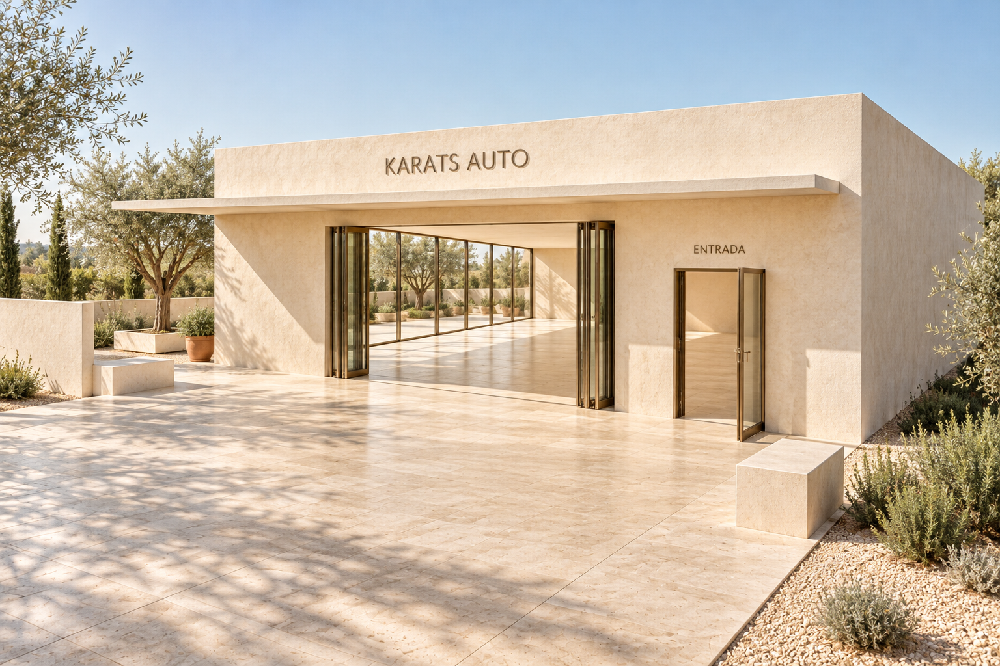
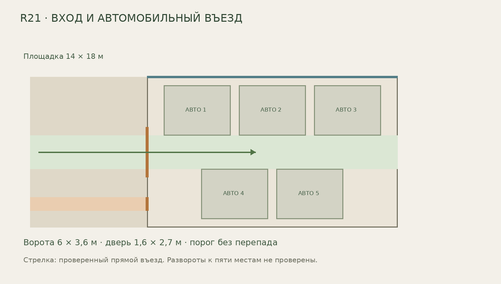
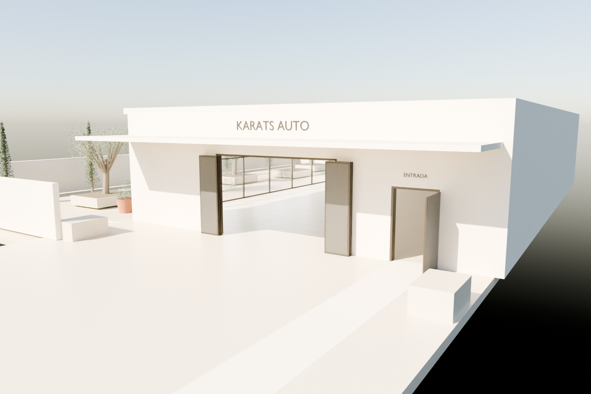
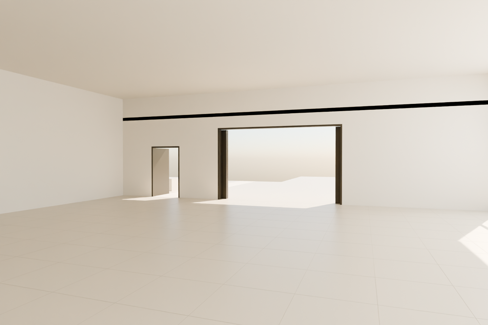
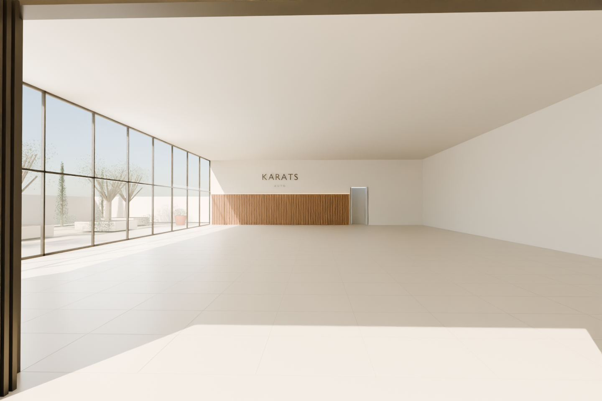

← Все версииR21. Вход для людей и въезд для автомобилей
Зал30×18м сохранён. В торце: складные ворота6×3,6м без центральной стойки, отдельная дверь1,6×2,7м, площадка14×18м и подъезд. Покрытие на одном уровне.
Прямой заезд габарита5,2×2,2×2м проверен на361 положении: пересечений нет. Манёвры к выставочным местам и строительные нормы не проверены. Это архитектурный концепт.
Скачать исправленный GLB · Проверка
Первое изображение: AI-эскиз1536×1024 по новой геометрии, requested high / reported low. Остальные ракурсы: технические рендеры одной модели. Не являются готовым миром Marble.
Визуальный эскиз входной группы (AI, не результат Marble)

План въезда

Единая модель: вид снаружи

Единая модель: вид изнутри

Единая модель: въезд в зал
